Karácsonyi kampány
Senior Social Strategistként vezettem a Puzzies 2025-ös karácsonyi kampányát a stratégiától a riportig, egy 7 fős csapattal. Ez a kampány utáni értékelésem: mi működött, mi nem és mit csinálnék legközelebb másképp.
Országos plakátkampány
35 óriásplakát, 12 CityLight és 12 digitális kijelző (DOOH) plázákban.
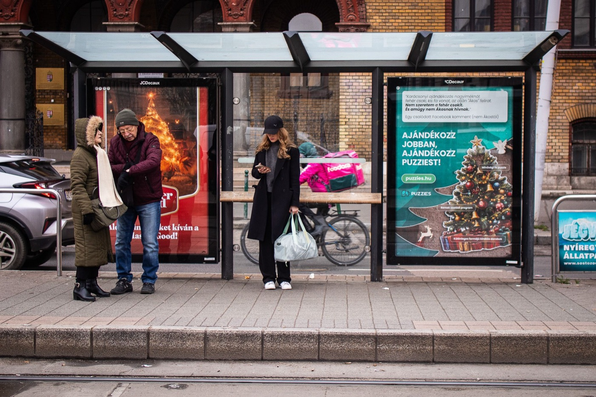
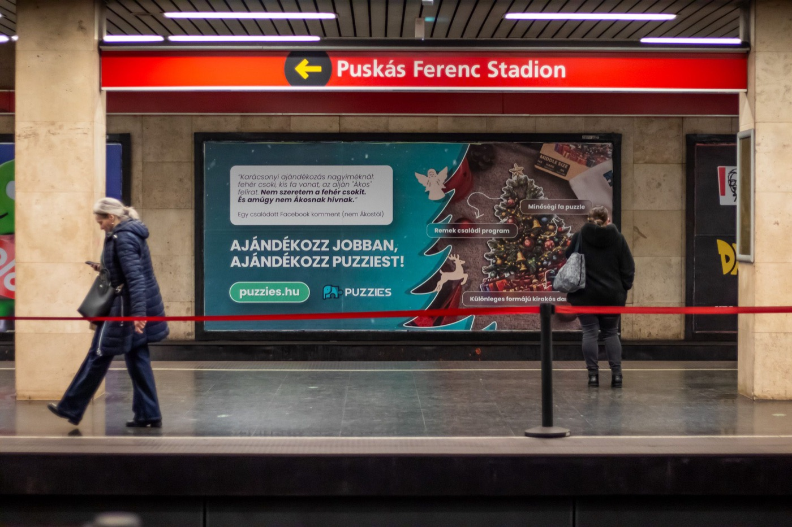
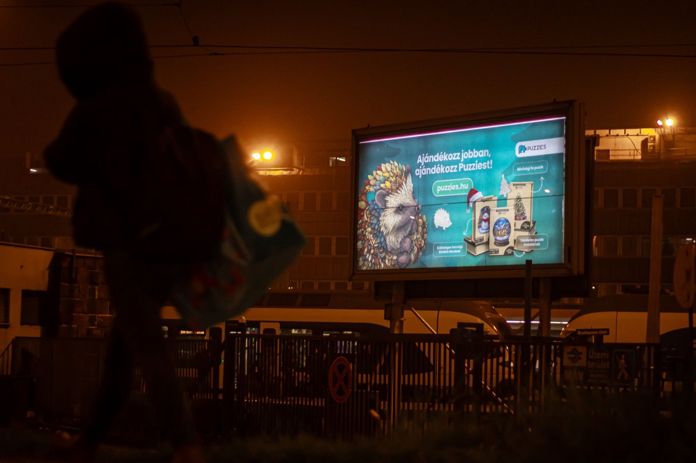
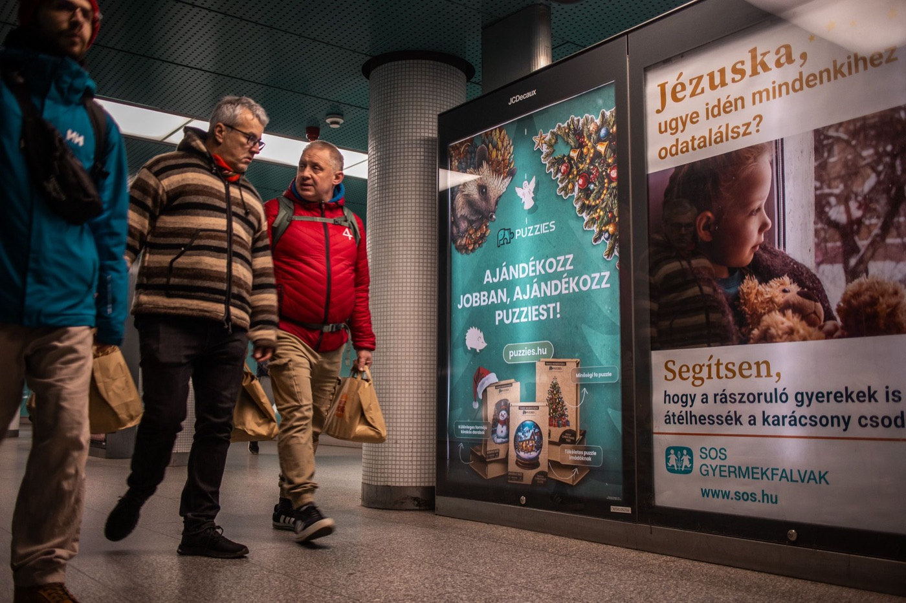
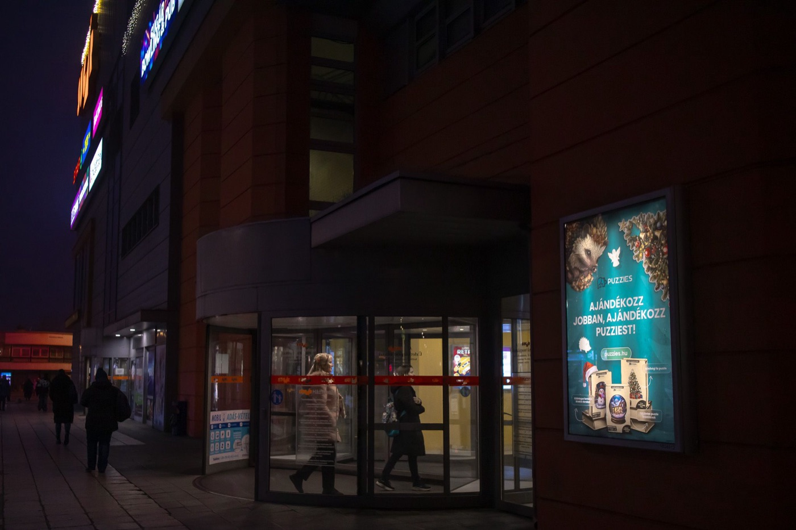
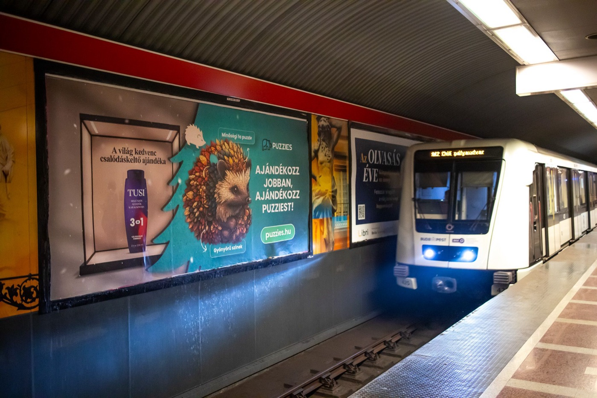
3D animációs TV-spot
Megjelenések
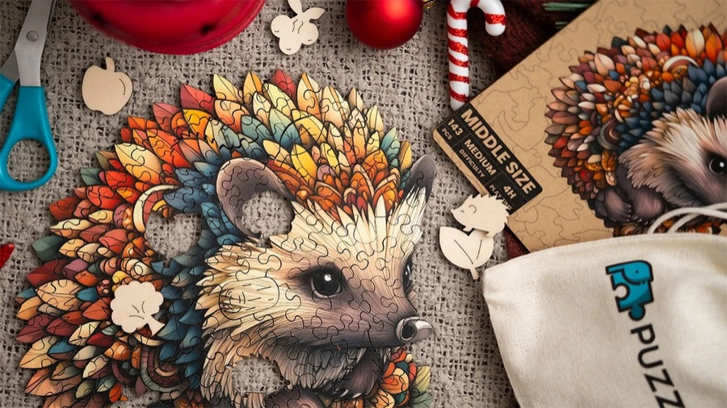
Nők Lapja CaféAz ajándék, ami összehozza a családot – újra hódít a puzzle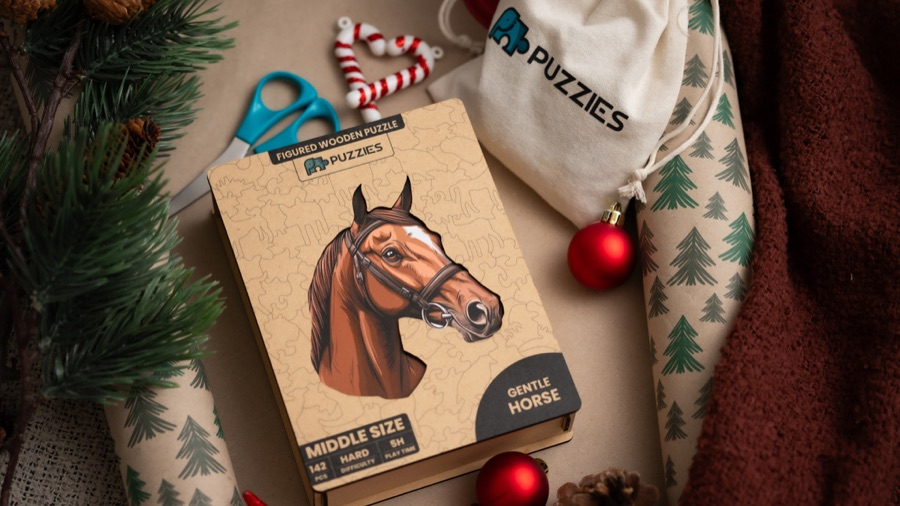
24.huMagyar márka lett az idei karácsony egyik meglepetés sikere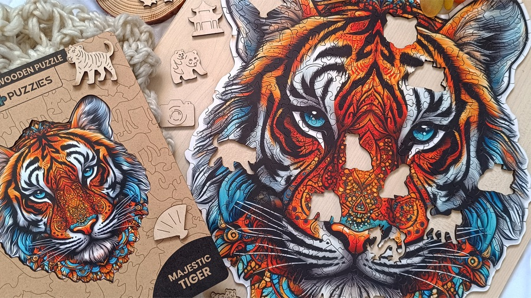
National GeographicÍgy válik a puzzle a természet kapujává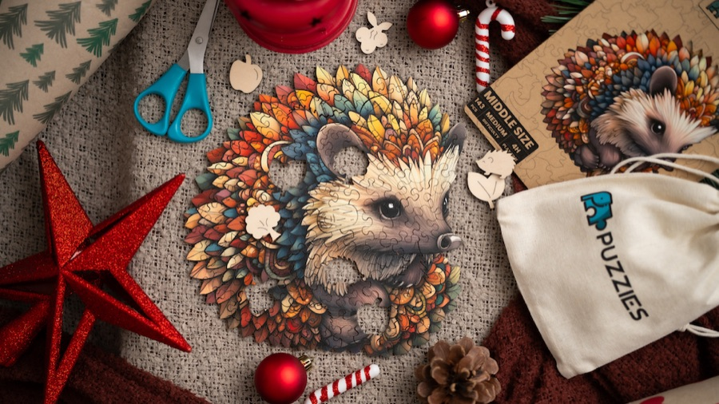
Szeretlek MagyarországEgy magyar márka, amely újra összehozza a családokatInfluencer-együttműködések
Több whitelisting videó bekerült a legjobban teljesítő PPC-hirdetések közé. A kampány egyik legfontosabb tanulsága: megéri influencerekkel dolgozni.
 Szigligeti Ivett
Szigligeti Ivett Tóbi Nikoletta
Tóbi Nikoletta Miló mesebirodalma
Miló mesebirodalma4,1 millió megtekintés
Top 10 videó
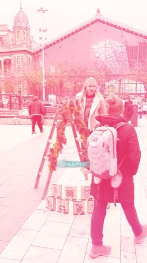
275Kmegtekintés ↗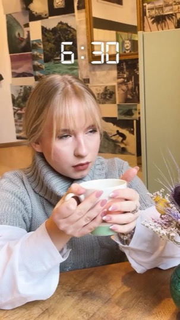
242Kmegtekintés ↗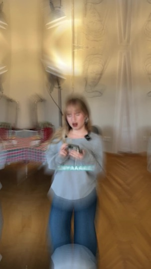
206Kmegtekintés ↗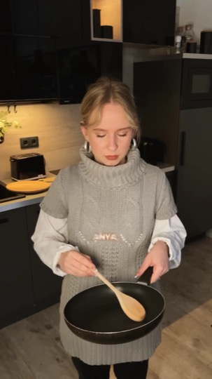
155Kmegtekintés ↗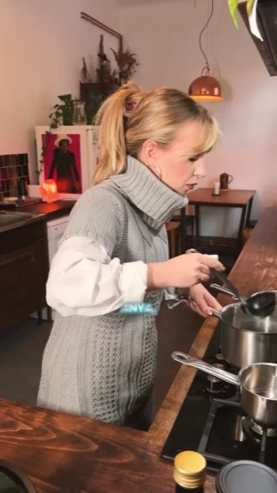
129Kmegtekintés ↗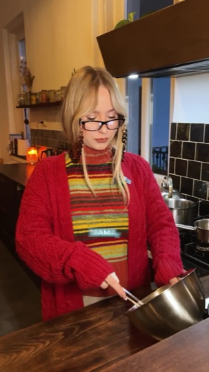
109Kmegtekintés ↗ 109Kmegtekintés ↗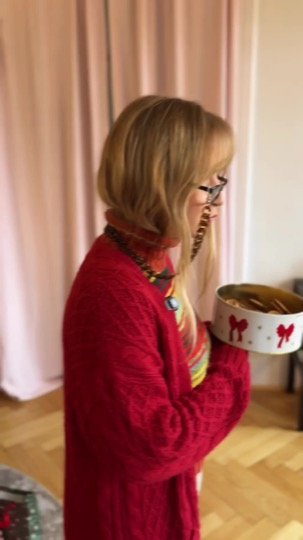
105Kmegtekintés ↗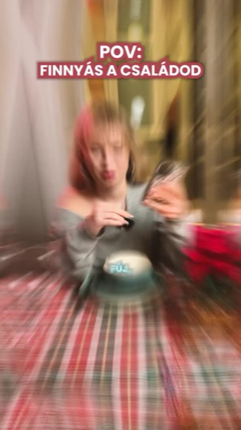
105Kmegtekintés ↗Mit tanultunk a legjobb videókból
- Az „utca embere” videók nagyon jól működtek, bár kevés bennük az értékesítési elem, így hirdetésnek nem a legjobbak. Brandépítésre kiválóak és sokat fel lehet venni egyszerre. A formátum másolása a vártnál jobban megosztotta a közönséget, a jövőben kevesebb azonos elem kell bele.
- A sitcom-videókat imádták, sokan már ismerték Zsófit a játékboltból. Jól el lehetett rejteni bennük a hirdetési elemeket úgy, hogy szórakoztatóak maradjanak. Ahol a videó végül úgy készült el, ahogy írás közben elképzeltük, az jól is működött. Ahol a forgatáson eltértek a forgatókönyvtől, az nem teljesített. Tanulság: a forgatókönyvírónak ott a helye a forgatáson.
- A karakterekkel sokszor eltaláltuk: a kommentekben sokan magukra ismertek.
- A szituációs videók retentionje 10–20%-kal jobb, mint az „utca embere” videóké, ami fontos hirdetési szempont.
Bottom 10 videó
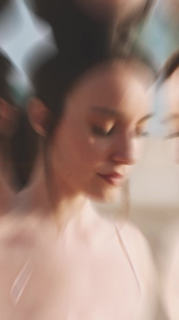
1Kmegtekintés ↗ 3Kmegtekintés ↗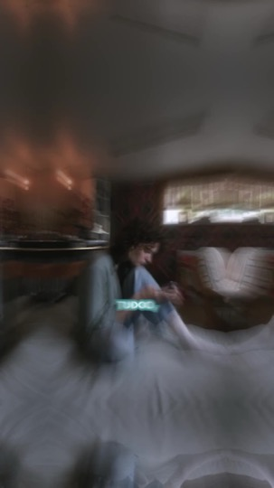
3Kmegtekintés ↗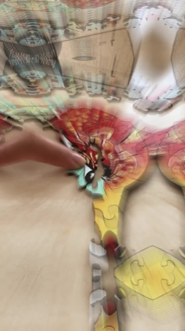
3Kmegtekintés ↗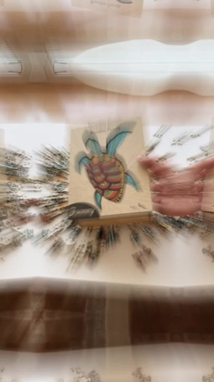
4Kmegtekintés ↗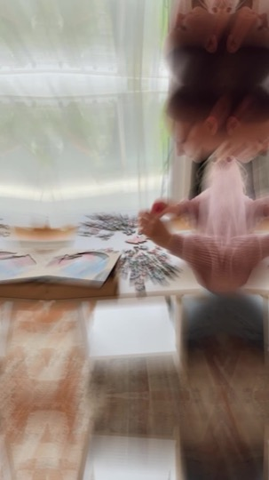
4Kmegtekintés ↗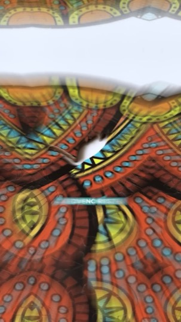
5Kmegtekintés ↗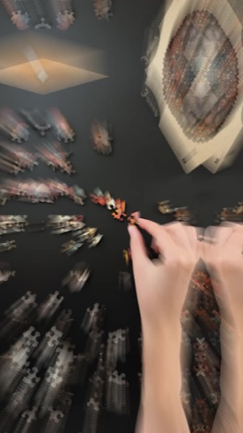
6Kmegtekintés ↗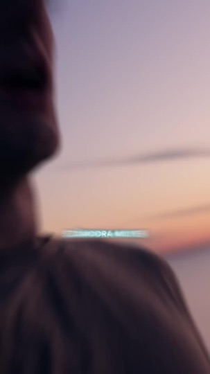
6Kmegtekintés ↗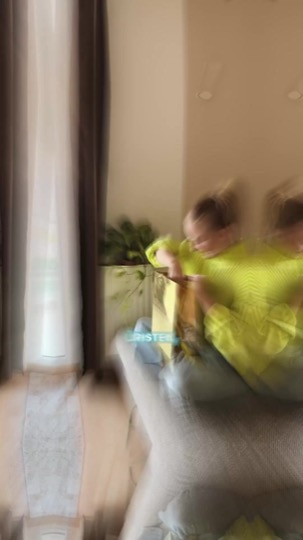
7Kmegtekintés ↗Mit tanultunk a leggyengébb videókból
- Az összes rosszul teljesítő videó narrált, mások által felvett nyersanyagból vagy stockfelvételekből vágott anyag volt. A kampány elején azért készültek, hogy bemelegítsék az algoritmust. Utólag nézve fölöslegesek voltak: sok idő volt megvágni őket és nem is teljesítettek.
- Szerintem azért nem mentek, mert nem elég érdekesek és sokszor nem arról szólnak, amit a kép mutat. Nehéz érzelmileg kapcsolódni hozzájuk, ráadásul nagyon hirdetésszaguk van.
Platformonként
A táblázatok a legjobb 20% és a leggyengébb 20% videó mediánértékeit hasonlítják össze.
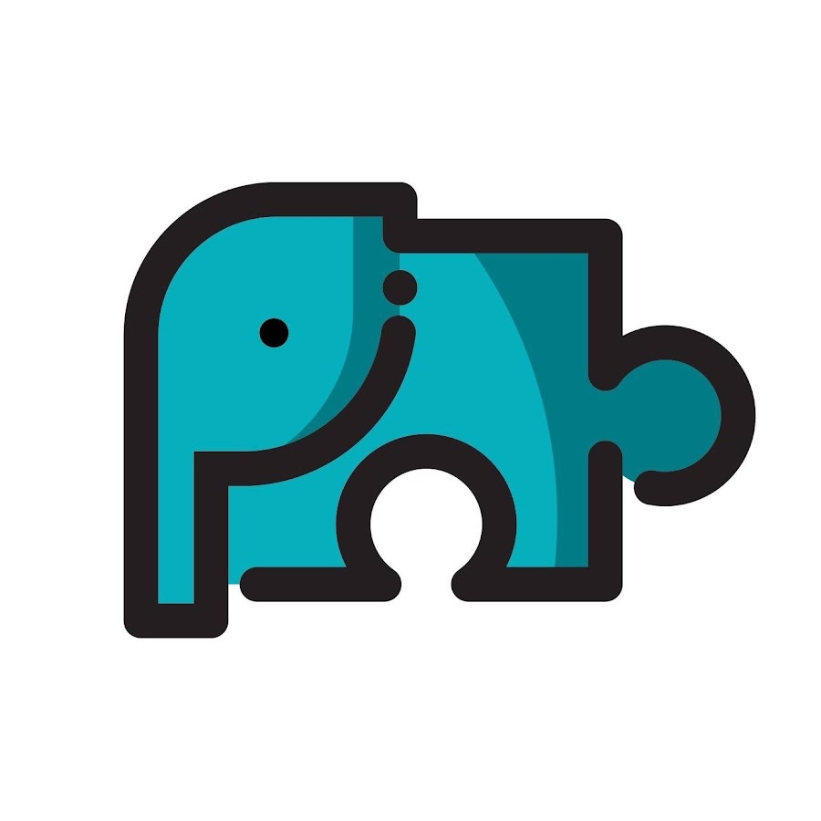
YouTube Shorts
- Megtekintés
- 1 523 284
- Interakció
- 41 033
- Átl. nézési idő
- 35,9 mp
| Mutató | Top 20% | Bottom 20% |
|---|---|---|
| Hossz | 57 mp | 49 mp |
| Nézési idő | 41 mp | 27 mp |
| Retention | 69% | 58% |
| Engagement rate | 2% | 3,3% |
| Nézésiidő-index | 115% | 75% |
| Retention-index | 115% | 98% |
| Engagement-index | 62% | 98% |
YouTube Shorts: következtetések
- Az algoritmus sok videót befuttatott és rengeteg hasznos, érthető adatot kaptunk, a TikTokkal ellentétben.
- A YouTube egyértelműen a minőséget és a hosszabb videókat részesítette előnyben. A legfontosabb minőségi mutató az átlagos nézési idő, utána a retention, harmadikként a hossz.
- Az engagement rate a platformoknak egyáltalán nem fontos. Annyira érdemes figyelni, hogy ne essen 1,5–2% alá.
- A jó videó receptje: 50–80 mp hossz, legalább 60% retention és legalább 35 mp nézési idő, egy TikTokon letesztelt hookkal. Ha ez megvan legalább 50 000 megtekintés mellett és van benne értékesítési tartalom CTA-val, akkor PPC-hirdetésként is jól fog működni.
- A lemorzsolódási görbék az első 5 másodperc után szinte ugyanazok, mint a TikTokon. Aki ott túljut az első 5 másodpercen, ugyanúgy viselkedik, mintha a YouTube-on lenne.
- Az animált CTA nem működik, extrém lemorzsolódást okozott. A CTA-t a jelenetekbe kell beleírni.
- Szakmai véleményem: a YouTube lehetne a jövőben a Puzzies legfontosabb platformja és a hosszabb videókkal is érdemes lenne próbálkozni. A boost költsége nagyjából ugyanannyi, mint a TikTokon, de a platform nem bünteti a hirdetést és sokkal jobb mutatókat ad.
TikTok
- Megtekintés
- 1 959 020
- Interakció
- 47 175
- Átl. nézési idő
- 5,1 mp
- Boost-költés
- 440 000 Ft
| Mutató | Top 20% | Bottom 20% |
|---|---|---|
| Hossz | 62 mp | 52 mp |
| Nézési idő | 6 mp | 7,7 mp |
| Retention | 11% | 14,6% |
| Engagement rate | 2,6% | 4,9% |
| Nézésiidő-index | 86% | 112% |
| Retention-index | 90% | 119% |
| Engagement-index | 71% | 103% |
TikTok: következtetések
- Szinte egy videót sem futtatott be igazán az algoritmus, a megtekintések többsége fizetett volt. Ezért elsőre ellentmondásosnak tűnnek az adatok: a top 20% rosszabb mutatókat hozott, mint a bottom 20%.
- A TikTokon rendkívül magas az ingerküszöb. A nézők 85%-át az első 7,7 másodpercben elvesztettük, vagyis a hookjaink nem voltak elég erősek ehhez a közönséghez.
- A hookon túl jól sikerültek a videók: aki túljut az első 5 másodpercen, 50–60%-ban végignézi.
- Organikus fiókokban az algoritmus a gyengébb hookú videókat is megtámogatja. Ezt a lehetőséget itt a PPC és a boost miatt elvesztettük és a vásárolt megtekintések szerintem nem érték meg.
- Szakmai véleményem: a TikTok impulzusalapú platform, márkaépítésre kevésbé alkalmas. A jövőben a YouTube-on letesztelt, erős hookú videókat posztolnám ki egy külön, hirdetésmentes profilra, viralitásra és portfólióépítésre.
- Megtekintés
- 217 705
- Interakció
- 8 220


Meta-platformok: következtetések
- A Facebookon jó organikus elérést lehet elérni. Érdemes oda mindent posztolni, de nem kell rá nagy fókusz.
- Az Instagramot a TikTokhoz hasonlóan portfólióplatformként használnám, a YouTube-on már letesztelt videókkal.
- A boost itt nagyon drága, a Meta-platformok PPC-hirdetésre valók.
Mi működött és mi nem
A karácsonyi kampány során a Puzzies egyszerre épített márkát és erősítette az értékesítést. Az országos köztéri megjelenések (35 óriásplakát, 12 CityLight, 12 DOOH) és a TV-s megjelenések nem hozták a várt eredményt, a digitális tartalmak viszont rengeteg tanulsággal szolgáltak.
Az influencer-együttműködések bizonyultak a leghasznosabbnak: több whitelisting videó bekerült a legjobban teljesítő PPC-hirdetések közé. A PR-cikkek presztízs- és SEO-építésre voltak jók, a hatásuk viszont nehezen mérhető.
A shortform videókra kitűzött 4 milliós megtekintési célt elértük: összesen 4,1 millió megtekintést és 100 ezer interakciót gyűjtöttünk. A legjobban az „utca embere” videók és a sitcom-sorozat teljesítettek. A sitcom úgy tudta becsempészni a hirdetési üzenetet, hogy közben szórakoztató maradt.
Platformszinten a YouTube Shorts lett a nyerő: ott futtatta be a legtöbb videót az algoritmus és ott kaptuk a leghasznosabb adatokat. A TikTokon a megtekintések többsége fizetett volt, a nézők 85%-a pedig már az első 7,7 másodpercben lemorzsolódott.